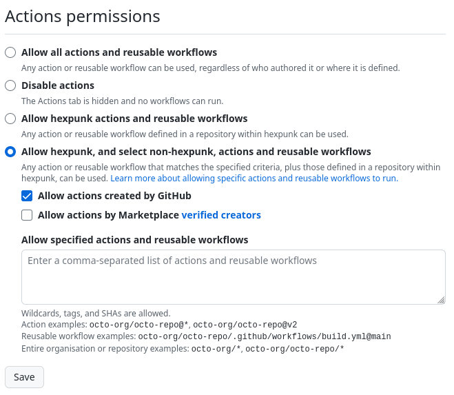

Back That Blog Up

There was a post on Hacker News about a week ago titled "Ask HN: What has your personal website/blog done for you?". As someone who has tried to blog for years but only recently started doing it in earnest, a lot of comments rang true to me.
I, too, have bounced off of many static site generators. While I strongly agree with the ethos behind static site generators, I find the barrier to writing to be too high. When I'm in the mood to write, I need to be able to load up a web page with a text box and just start writing.
Bear Blog, the service I'm currently using to host this site, provides exactly what I need. Kudos to Herman Martinus for developing and maintaining this fantastic service.
There was something else in that Hacker News thread that made me a little nervous, though. A particular comment mentioned keeping copies of their blog posts, which came in handy when their platform of choice shut down. Many others echoed this sentiment of keeping backups of your work, just in case.
Herman is doing a fantastic job, but he's only one person, and shit happens sometimes. I decided build a little safety net by using GitHub Actions to automatically back up my blog.
A shell script
View the complete shell script
.github/workflows/backup.sh
#! /bin/sh
set -e
set -u
# Delete all directories that are not hidden to avoid keeping deleted files.
find . -maxdepth 1 -type d -not -name '.*' -exec rm -r "{}" \;
# Download website and images, ignoring /hit and /upvote paths.
wget --wait=2 \
--mirror \
--page-requisites \
--no-parent \
--convert-links \
--adjust-extension \
--span-hosts \
--domains="jaysherby.com,digitaloceanspaces.com" \
--exclude-directories="hit,upvote" \
-e robots=off \
https://jaysherby.com
# Delete CSRF tokens since they'll change every page load.
# Delete last build date tag since it will change often.
find . -type f -name "*.html*" \
-exec sed -i '/<input.*name="csrfmiddlewaretoken".*>/d' {} \; \
-exec sed -i '/<lastBuildDate>.*<\/lastBuildDate>/d' {} \;
# Detect any added, changed, or deleted files
if [ -n "$(git ls-files --modified --deleted --others)" ]; then
git add -A
git commit -m "Backup $(date)"
git push origin main
fi
Let me start with Wget. It's doing the heavy lifting here to basically crawl my site and download everything.
wget --wait=2 \
--mirror \
--page-requisites \
--no-parent \
--convert-links \
--adjust-extension \
--span-hosts \
--domains="jaysherby.com,digitaloceanspaces.com" \
--exclude-directories="hit,upvote" \
-e robots=off \
https://jaysherby.com
Most of these options are copy-pasted from an article I found called "How To Download A Website With Wget The Right Way". I prefer having the options spelled out long-hand in scripts like this over single character arguments. It's easier to understand.
I made a few changes from the example on the site I linked to above.
- I removed the
--user-agentargument. Wget's default is fine. - I removed the
--no-clobberargument because it's not pertinent in my case for reasons that will become clear in a moment. - I removed the
--limit-rate=20Kargument because although I understand the purpose of setting--wait=2to avoid overwhelming the server with a ton of requests all at once, it seems to me like limiting the transfer speed would end up wasting precious time that could be spent serving other clients. It really doesn't matter for the amount of traffic I get anyway. - I added
--span-hostsand--domains="jaysherby.com,digitaloceanspaces.com"to ensure images are downloaded. Bear Blog is currently hosted on Digital Ocean and images are stored in their Spaces product, which is more or less a clone of AWS S3. This feature is currently configured such that image URLs live in a subdomain ofdigitaloceanspaces.com. - I added
--exclude-directories="hit,upvote". Wget was downloading files from/hitwhich is how Bear Blog powers its analytics service. It's currently implemented by setting URLs in that path as a border image applied to the page body on hover. Clever! But it currently only returns a response of "Logged", which is useless for my backups and would present as noise in my analytics. The/upvotepath is how posts are "toasted". Wget should never follow these by default since they are form actions, but better safe than sorry.
# Delete CSRF tokens since they'll change every page load.
# Delete last build date tag since it will change often.
find . -type f -name "*.html*" \
-exec sed -i '/<input.*name="csrfmiddlewaretoken".*>/d' {} \; \
-exec sed -i '/<lastBuildDate>.*<\/lastBuildDate>/d' {} \;
This command looks through the HTML files and removes two patterns from them.
The first is a hidden input within the "toast" forms that contains a CSRF token. I'm removing this because, as the comment says, the value will be different on every page load. That will make for a lot of unnecessary noise in my backups.
The second is the last build date tag that is found within my blog's RSS file. This is updated on a regular basis whether any content has changed or not. Again, this would make for a lot of noise in my backups.
Notice in the second sed command that the slash in the HTML tag is escaped! I originally overlooked this and it bit me. ü§¶
Quick shout out to this website that is like Regex 101 for sed. It saved me a lot of time testing out my sed commands.
# Detect any added, changed, or deleted files
if [ -n "$(git ls-files --modified --deleted --others)" ]; then
git add -A
git commit -m "Backup $(date)"
git push origin main
fi
This does what it says on the tin. It uses the git ls-files command to determine if any files have changed. If so, it makes a commit with the current timestamp in the commit message and pushes it up.
Let's skip back to the beginning of the script.
# Delete all directories that are not hidden to avoid keeping deleted files.
find . -maxdepth 1 -type d -not -name '.*' -exec rm -r "{}" \;
If the script has run at least once before, the git repository will have two directories at its root: jaysherby.com and bear-images.sfo2.cdn.digitaloceanspaces.com. This command is a little idiosyncratic for a shell script, but it mimics what I would do at the command line. It finds and recursively deletes all top-level, non-hidden directories.
This is to facilitate the removal of potentially deleted pages and files. For the purposes of my backups, I want the git history to reflect file deletion since I can always recover deleted content.
Unfortunately, Wget doesn't have anything built into it like Rsync's various --delete arguments, which will make sure your source and destination match exactly after synchronization by deleting files from the destination that no longer exist at the source.
I find this particularly unfortunate because it means having to download my blog's images on every backup attempt despite Wget's automatic If-Modified-Since header support and Digital Ocean Spaces' 304 Not Modified support. Bear Blog itself doesn't appear to support If-Modified-Since request headers at this time. Although that doesn't really matter since I can't leverage it anyway.
A GitHub Actions workflow
View the complete YAML file
.github/workflows/backup.yml
name: Back Up Website
on:
schedule:
- cron: "0 17 * * *"
workflow_dispatch:
jobs:
back-up:
runs-on: ubuntu-latest
steps:
- uses: "actions/checkout@v3"
- name: Install required packages
run: |
sudo apt-get update
sudo apt-get install -y findutils git sed wget
- name: Configure identity
run: |
git config --global user.email "10983817+hexpunk@users.noreply.github.com"
git config --global user.name "hexpunk"
- name: Run backup script
run: sh $GITHUB_WORKSPACE/.github/workflows/backup.sh
The GitHub Actions workflow file was thankfully straightforward to write.
on:
schedule:
- cron: "0 17 * * *"
workflow_dispatch:
Run the script daily at noon Central Standard Time, my local time zone, so if it ever fails, I get emailed about it at a reasonable time. GitHub Actions are set to Coordinated Universal Time, hence the offset. I used this website to refresh my memory of cron expression syntax.
The workflow_dispatch key is there so I can run the job manually via the web interface if I need to.
jobs:
back-up:
runs-on: ubuntu-latest
steps:
- uses: "actions/checkout@v3"
- name: Install required packages
run: |
sudo apt-get update
sudo apt-get install -y findutils git sed wget
The first step checks out the git repository. The second step installs all required software to run the script. All of these tools are currently installed by default in the ubuntu-latest job runner. Better safe than sorry, though.
Remember to use sudo to install software in GitHub's ubuntu-latest job runner, unlike the usual situation for Docker containers. This one bit me.
- name: Configure identity
run: |
git config --global user.email "10983817+hexpunk@users.noreply.github.com"
git config --global user.name "hexpunk"
I was surprised to find out the job runner didn't have any git identity set up by default. I added my own username and GitHub's email alias for my account. If you're not using your email alias on GitHub, you really should be.
- name: Run backup script
run: sh $GITHUB_WORKSPACE/.github/workflows/backup.sh
Finally, run the script I wrote.
Setting permissions
One last consideration before this setup is ready to roll. Because the shell script is checking files into git, I had to set up the repository's Actions settings accordingly.
The repository I set up for this is public. GitHub sets a monthly limit to the amount of time Actions can run per month on private repositories before you're either cut off or you have to pay. I don't want randos taking advantage of this to run malicious actions, so I set this setting to disallow unapproved collaborators from triggering Actions.
Finally, I set the repository so only actions authored by me and GitHub can be run. I need to allow GitHub's official actions since I'm using their "checkout" action in my workflow.

This setting is a little redundant since I've already disallowed unapproved collaborators, but better safe than sorry.
That's it. Works like a charm. Every day at noon, it automatically backs up my blog for free.
This approach should be adaptable for backing up almost any kind of website.
How might this fail?
Whenever I have to make choices that involve trade-offs, I like to document how my decisions might betray me down the line.
First and foremost, I'm completely at Herman's mercy here. He may choose to change how Bear Blog works in ways that will make my script fail. If he changes how analytics, upvotes, or image storage works, it may break my backups in ways I won't immediately notice.
Second, I'm also at the mercy of Microsoft since I'm relying on GitHub. In the unlikely event that GitHub completely disappears one day, my backups are gone. Microsoft could also choose to fundamentally change how their Actions product works, or what versions of software packages are available on the platform.
Microsoft could also suddenly decide my use of GitHub as a backup storage service runs afoul of their T&C. Seems unlikely. I doubt I'm costing them an entire cent. But it's technically possible.
I find these risks acceptable for my use case.